Posts
Trip report #2: Day 3 through Day 5
[Category: 100 Mile Wilderness] [link] [Date: 2010-07-04 15:46:35]
Day 3: Friday, June 18 (Cloud Pond Leanto to West Chairback Pond) 5.2mi (+0.3mi)
It was a chilly, windy night at Cloud Pond Leanto and Zach described his struggle to sleep the following morning over breakfast. He had opted to leave behind a sleeping bag to save weight and experienced a chilling breeze all night while exposed in the windward facing shelter. We had woken up around 7AM and I immediately set to work filtering water, packing up gear, and eating breakfast. My mind was hard set on making miles and I was aiming for the cleanest start possible. Zach had considerable difficulty the day before and had spent a night exposed to the elements and I could see that his physical condition had not improved. What I had attributed to general tiredness was looking more and more like serious fatigue. It was now that I began to worry about his condition. Much to his credit, he went through his morning routine and we set out at our earliest time yet after saying goodbye to James.
After making our way back up the winding side trail that led to Cloud Pond Leanto we once again set off northward on the Appalachian Trail. While there was no downpour overnight, the rocks and roots were still glossed over with moss and morning moisture. After no more than twenty minutes of hiking I heard a body hit the ground and plants rustle followed by a scream and reversed my direction until I found Zach who had taken a fall while moving down a cluster of jagged bedrock. He scraped his leg and was shaken up but had miraculously avoided serious injury. Exposed branches were only inches from critical points on his body. Later in the day he pulled out a sharp stick which had punctured his backpack only inches behind his head. This was not a positive start to the day and the rest of the day was a pair of struggles up Fourth Mountain (2,383ft) and Third Mountain (2,061ft). As Zach summited Fourth Mountain he was shivering in a cold sweat and even the rich, creamy taste of Gouda cheese was not enough to re-energize him. I can only imagine the struggle (both mental and physical) that he was experiencing at this point. His condition was worsening, we still had the White Cap Range to cross, and a trip that had been planned for over three months was slipping away. The only option he had was to continue. There was no easy way out at this point along the trail and the nearest emergency extraction point was outside of the Barren-Chairback Range.
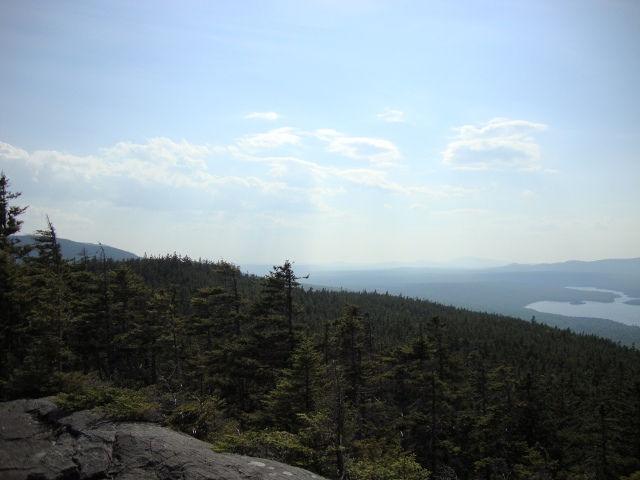
View from the ledge near the summit of Fourth Mountain
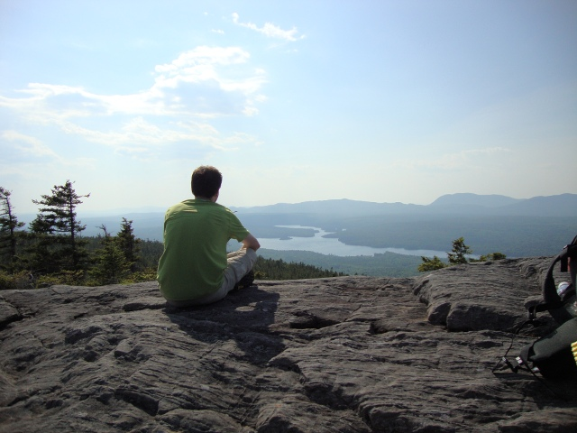
The trekking pole I borrowed from Zach had a monopod camera mount
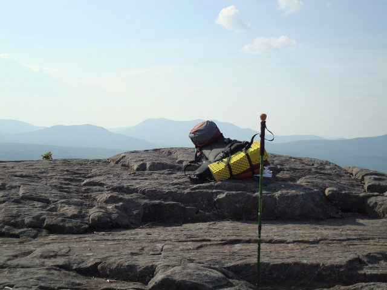
Getting a bit artsy with the cameraAs I arrived at the side trail that led to West Chairback Pond I left my pack and began to filter water from West Chairback Stream while waiting for Zach to arrive. At this point, I had the sense that Zach could go no further. We ended up finding a few quaint looking tent sites only a few hundred yards from the pond and set up camp for the night. Zach gave himself an ultimatum before turning in for the night. He resolved to drink a few liters of water, eat the largest dinner he could handle, and sleep without restrictions. If his condition had not improved dramatically by the morning then we would have to start exploring extraction options. I provided him with an antihistamine in hopes that it would assist him in sleeping soundly.
There was plenty of time in the evening due to our early stop and I spent the rest of the evening cleaning gear, eating dinner, tending to my feet after a long soak in the pond, and going over maps. West Chairback Pond was a popular fishing destination and there were fisherman on the lake who walked past our tent sites (Fosters beer cans in hand, of course) as the sun set. They wished me luck after saying they would be back in the morning to continue fishing. I spent the rest of the evening considering possible scenarios for the next day. If Zach felt well enough to continue, what would our mileage goal be for the day? We were falling behind schedule drastically and it was a serious supply concern for me. Conversely, I had to accept the reality that Zach may have to end his trip prematurely. I never had any doubt about my own continuation, but I had to consider Zach's safety and if that meant taking responsibility for contacting someone for extraction and helping him get to the extraction point then I would have to invest a day or two assisting him. I went to sleep feeling uneasy about the future and the lack of control I had of it.
Day 4: Saturday, June 19 (West Chairback Pond to Carl A. Newhall Leanto) 11.6mi
While being as quiet as possible, my early morning rise of 5:30AM left me with quite a bit of time to once again tend to my feet and gear. I re-assessed my packing strategy since the volume of food I was carrying had changed measurably. My curiosity about Zach's condition went unsatisfied for around an hour and a half until he stumbled out of his tent. He looked markedly more pale and weak than he had been the previous day and described a night of vivid dreams and drenching sweat. Something was clearly not right and it was at this point that we both made a mutual decision that his continuation of the trail posed a considerable risk to his health. Hiking the trail while healthy is difficult enough, the added pressure of dealing with feelings of sickness is a lot to deal with at once. At this point he had been at odds against a body that felt as if it was run over by a truck for two days.
The fisherman who I met the previous night made true to their word and returned in the morning. After discussing extraction points with Zach, we decided consulting the local fisherman would be a wise maneuver. A sharp yell across the pond garnered the attention of four fisherman who, after paddling over in their metal canoes, kindly offered to take Zach out to a gatehouse where he could call Shaw's for an extraction. With this settled I knew the remaining 72 miles of the hike would be a solo hike. I made sure to filter some extra water to leave with Zach since we had no idea when the fisherman would break for the afternoon or for the day. I left him alone after he managed to break down camp and watched as he force-fed himself some pop-tarts for breakfast. We said goodbye and wished each other good luck.
While studying the maps the previous night I saw that hiking to Sydney Tappan Campsite would give me the best possible position to tackle the White Cap Range. After passing by Chairback Gap Leanto where I met a ragged looking man in his early thirties who spoke nothing but complaints about the water, bugs, and his lack of food, I began the descent out of the Barren-Chairback range which involved a few challenging boulder field traverses. Knowing that I was now alone caused me to adopt a much more careful approach to descents at the expense of speed and time. The trail leveled off and I knew I was approaching the West Branch of the Pleasant River. This river requires a ford but it is extremely easy and enjoyable. My feet appreciated the chance to breathe in the middle of the day and I rewarded them with another soaking and an extended lunch break after fording the river. I was glad to finally be looking at the second of three maps that would be required for this hike.
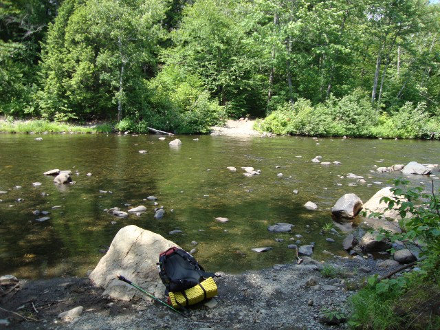
The West Branch of the Pleasant River (an easy ford)
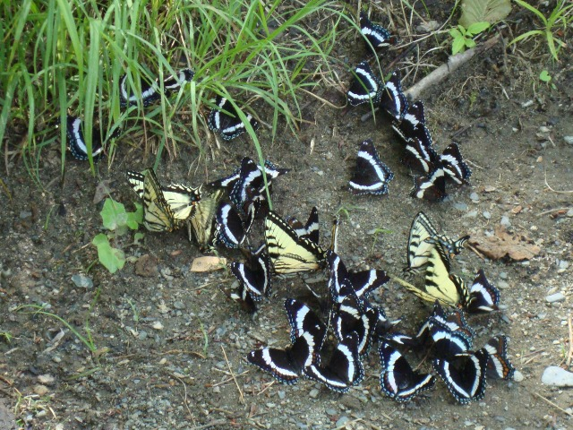
There were lots of butterflies near the riverThe trail at this location is the primary access route to the Gulf Hagas region which is known for its beautiful scenery which consists of multitudes of streams and tight canyons. While I hiked past locals heading to Gulf Hagas for a day hike wearing sandals I received numerous stares. At this point of the hike I'm sure I already had acquired a relatively grizzly appearance and a rugged demeanor.
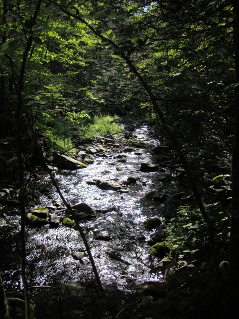
A beautiful looking Gulf Hagas Stream from the trailAfter crossing the West Branch of the Pleasant River, the trail begins a gradual ascent toward White Cap Mountain. It is certainly not steep, but miles and miles of constant uphill imposes a similar physical toll. Despite the difficulty, my stamina held strong and my endurance surprised me. I was passed by a few northbound hikers who were too occupied with trying to make time to stop for a meaningful conversation. I could see their packs were obviously half the size of my own. There were numerous beautiful views of Gulf Hagas Stream since the trail parallels it all the way up to Carl A. Newhall Leanto. I arrived at the leanto with over two hours of daylight remaining and decided to take a break and consider my options. My original intentions were to push on to Sydney Tappan Campsite, and I surely had the energy to do so. As I relaxed by the stream I began to notice signs that inclement weather was imminent. Carl A. Newhall Leanto was clean, bug free, unoccupied, and had an amazing water source nearby. Most importantly, it would give me adequate protection against any rain or storms that blew through overnight. I decided to take the safe option and stay at the leanto.
Deciding to stay was a wise decision. I had a lot of time to relax before attempting the largest climb of the hike and I was alone for the first time in a shelter while in the wilderness. After a double serving of macaroni and cheese I spent the rest of the evening watching rodents attempt to gain access to my food bag. There was also a large rabbit who was feeding on a nearby tree stump. I decided that tomorrow would be a make-or-break day for me. I knew I had to summit White Cap Mountain and numerous other peaks and that these were the last difficult climbs before the trail flattened out in the low-lying lake country. I went to sleep in the shelter with the inner wall of my Hubba HP setup with the side open. After an hour I heard the rain begin pattering on the roof of the shelter, zipped up the tent and fell back asleep.
Day 5: Sunday June 20 (Carl A. Newhall Leanto to Cooper Brook Falls Leanto) 18.9mi
My desire to be in the best condition possible for the difficult task of climbing over the entire White Cap Range led me to sleep until 7:30AM and take extra time in the morning before departing. To my surprise, many of the ascents and descents of the peaks in the White Cap Range had sections of stone stairs. These were a welcomed dose of assistance that were nonexistent in the Barren-Chairback range. I only met two hikers until the summit of White Cap Mountain. It was an older man and a seemingly young woman with a German shepherd. The first peak I had to tackle was Gulf Hagas Mountain (2,683ft) which was a steep but manageable climb. After descending into the gap between Gulf Hagas Mountain and West Peak I passed through Sydney Tappan Campsite. I was once again glad that I had chosen to stay at Carl A. Newhall Leanto the previous night. The campsites were a mess and the water source was of disturbingly poor quality.
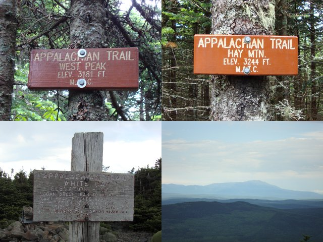
Some of the peaks that must be crossed to gain access to White Cap MountainBefore gaining access to White Cap Mountain it is necessary to climb West Peak (3,178ft) and Hay Peak (3,244ft). Both of these peaks are wooded summits with minimal views of the surroundings. Its almost as if something is being hidden from you as you close in on the open peak of White Cap Mountain. I was rained on sporadically during the morning while I grew closer to the summit of White Cap Mountain but there was a clearing in the weather just as I reached the summit (3,654ft) which provided me with limited but spectacular views. There were two other hikers who were resting and enjoying the cool breeze blowing in. We explored the summit as a group and managed to locate the weather station that I had spotted from the air when we flew over five days ago. I managed to send a few texts out to my family and to Zach to let them know that I was alright, but I didn't receive any texts back until days later.
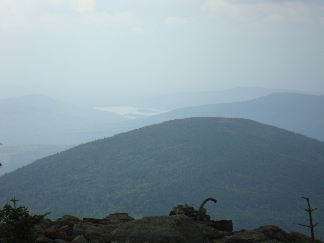
One of the only clear views I received upon reaching the summit of White Cap Mountain
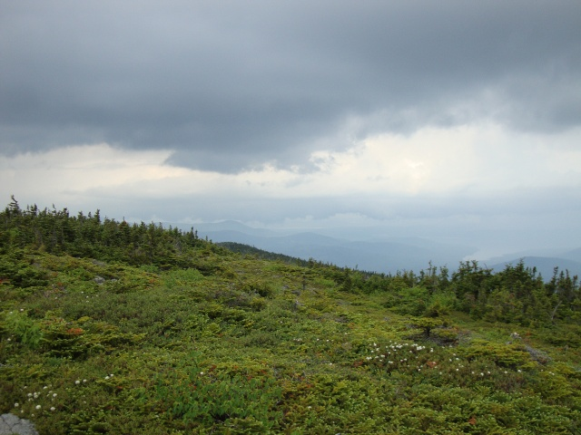
I love how the landscape and vegetation changes with altitude
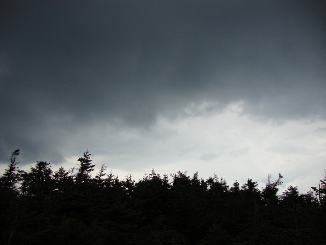
The storm was certainly ominous
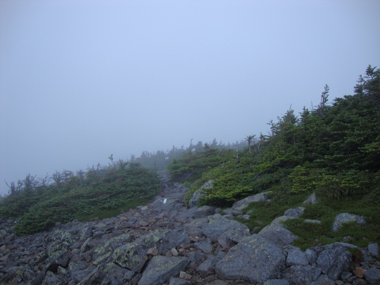
Views from the summit were hampered after the storm blew in
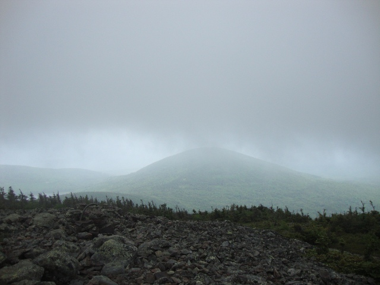
Looking beneath the storm clouds
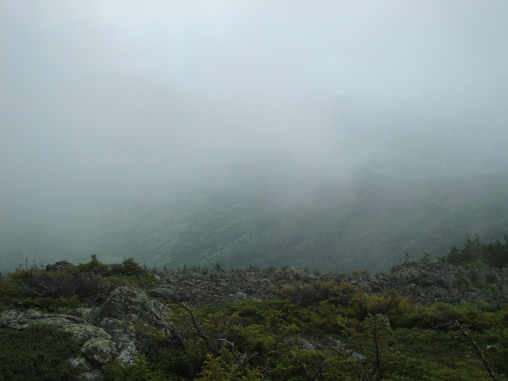
Looking down into a valley while walking down the treeless summit of White Cap MountainViews of Katahdin were nonexistent due to the inclement weather and the small clearing of rain quickly disappeared as a storm blew in. Experiencing a storm while on an exposed summit was a combination of frightening and inspiring. The other hikers sought refuge by continuing down to the wooded slopes of West Peak while I had a half mile hike on the exposed face of White Cap Mountain as the storm blew in. I continued to rest after putting on my Whitaker Mountaineering Storm Shell which provided protection from the wind and rain but the temperature soon plummeted and my hands began to become quite cool. I decided that it was time to leave, and my descent led me through different layers of the storm as I lost altitude. At one point, the weather cleared briefly and I could see Katahdin looming far off in the distance for the first time on the hike.
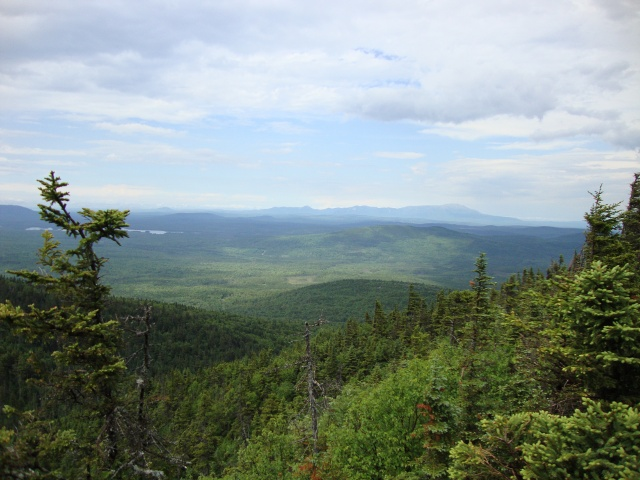
The weather cleared and I received my first proper glimpse of KatahdinRevitalized by my success so early in the day (it was not even 1PM yet), I hastily descended until I found myself at Logan Brook Leanto which was already packed with hikers. They all knew each other and it was the most motley crew I encountered during my entire hike. There was a Rastafarian (dreadlocks and all), a German woman in her 60's, an older man with an epic beard who was cooking in a homemade Heineken pot, and another older man who had a decidedly redneck-looking appearance which was reinforced by his large hiking staff that sported an American flag tied to the top. From the limited conversation that I heard I deduced that the group was leanto hopping together. The trail can change the way many people interact and I often find that many barriers are torn down after a few days of mutual hardship. It was not but 3:30PM and the group was calling it a day. I suppose that it would have been unrealistic for them to cross the White Cap Range so late in the day in inclement weather, but one would assume that they would have timed their days a bit more conveniently.
East Branch Leanto was my goal for the day and I, once again, made it there at breakneck speed. While I was relaxing I formulated a plan fueled by my ego which had grown due to my success throughout the day. I still had over two hours of daylight left and at least an hour of twilight. If I could make it to Cooper Brook Falls Leanto tonight I had the chance of making it to White House Landing (WHL) for an early dinner and a proper nights sleep the next day. I couldn't help myself and decided to push on. I encountered difficulty as my speed suffered immensely when I had to, once again, summit a mountain. While small, I had been worn down by the previous peaks and Little Boardman Mountain (2,017ft) posed a formidable challenge for my sore calves and blistered feet. Views of the sun setting over numerous ponds and lakes lined the trail down to Cooper Brook Falls Leanto and made some of the difficulty of the last bit of the day worth the effort. The final push wrecked my feet and I never fully recovered from the blisters that were created on this extremely challenging and lengthy day.
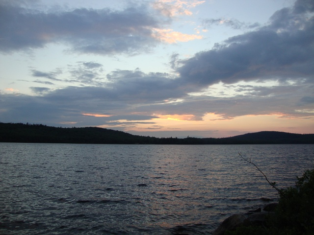
One of the benefits of hiking in the evening is the chance to witness beautiful sunsetsI was in terrible shape as I arrived at Cooper Brook Falls leanto. I had to hike in the dark for around 45 minutes and was worried I would miss the sign pointing out the leanto. I had completed a 19 mile day involving five summits and my feet were the primary sufferers. There was an older woman already asleep and I attempted to be as covert as possible about my setup and dinner preparations. I now believe that the woman was the infamous "Mother Goose" who was the first woman to complete a yo-yo which is a dual thru-hike that alternates direction. I never got to see her or talk to her as she was gone by 5:30AM the following morning. The feeling of knowing that I was deep into the second map of the hike and would soon be entering the last map was a reward in itself. As I went to sleep, my thoughts were occupied by the attraction of a proper hot meal at WHL and I was glad to know that I had set myself up within striking distance.
Trip report #1: The beginning through Day 2
[Category: 100 Mile Wilderness] [link] [Date: 2010-06-28 18:49:24]
Monday, June 14 (Cincinnati, OH to Groton, CT)
In order to properly time our arrival in Connecticut, we started our drive northeast at around 4AM. I surely didn't manage any meaningful sleep and I doubt Zach did either. We wanted to break the drive up to Maine into two sections in order to preserve our strength as much as possible. Luckily, the parents of one of Zach's friends (Nate) live in Connecticut and were more than willing to accommodate us for a night before our final push toward Maine. While it had been explained to me that Nate's parents are definitely top contenders in the running for the "nicest people ever" I was still surprised at their hospitality. I wish Nate could have gone on the trip with us but he was preoccupied with summer courses while working toward a graduate degree at the University of Louisville. We were welcomed in like family and given a proper New England dinner (which I, of course, could barely participate in due to my choice of being a vegetarian). After dinner we were treated to views of the Atlantic and the end of a car show on the beach. Dessert was a homemade Oreo ice cream cake that contained enough chocolate and sugar to make anyone salivate.
After all of the activities Zach and I spent the rest of the evening going over gear, honing our packing strategies, and making decisions on what we needed and what we could leave behind. I chose to use the MSR Pocket Rocket and to bring the Lafuma Warm n' Light 600 sleeping bag. My total weight was an amazing 37.5lbs. I was honestly ecstatic that I had achieved this low a weight. We went to bed for a good nights sleep and woke up to find numerous breakfast delights laid out for us in the kitchen. Danishes, fruit, breads, cakes, juice - you name it. We ate what we could handle (we each had an ultra-healthy piece of the Oreo ice cream cake, too) and took some treats with us to comply with the note that had been left instructing us to do so. After throwing all of our gear back into the car we headed north toward Monson, ME.
Tuesday, June 15 (Groton, CT to Monson, ME)
It is easy to misinterpret Maine's geographic location. One often forgets just how far north and east the state is. Driving toward Monson was relatively uneventful. We made sure to drive past Monson on ME-15 to catch a glimpse of the Appalachian Trail (AT) trailhead going into the 100 mile wilderness. After that we headed back into Monson to locate the infamous hiker lodge known as Shaw's. We had yet to decide what our plans were for the last night prior to beginning our hike at this point, and we were treated well by Dawn at Shaw's who kindly went over the maps with me to carefully point out extraction points that we should be aware of in case something went wrong. We were quite hungry and some of the only food in town to be had is at the Lakeshore House. Tuesday happens to be $4 pizza day so I treated myself to a pizza and salad for a bargain price. After eating we headed to the only gas station in town to fill up and decide what our plans were for the night.
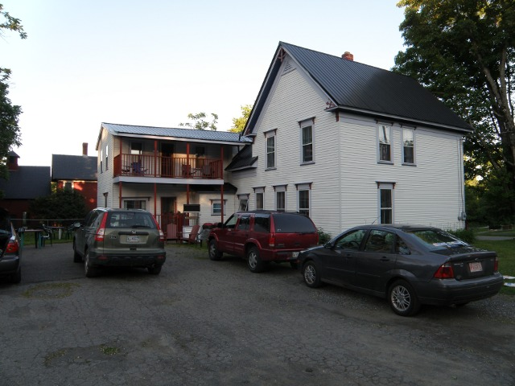
The outside of Shaw's (photo by Zach)This was an important decision. We had to be at the Katahdin Air (KA) flight base at 9:30AM and it was approximately a two hour drive from Monson. We could either head up to Millinocket and try to wrangle a place to stay for the night or stay in Monson and wake up early in order to make it up to KA in time. Since Dawn at Shaw's had offered extraction services I argued that it would be wise to at least stay the night and eat breakfast there in case we did need to use the service. Zach concurred and we stayed the night at the infamous hiker hostel.
Despite the fact that we were only at Shaw's for a single night we were given a significant glimpse of AT culture. Other hikers at Shaw's included a father, son, and friend who had just completed the wilderness. They told tales of abandoning gear in desperate attempts to lighten their packs. Their goal is to get to Harper's Ferry before the two recent high school graduates begin college. What amazed me most was the sheer size of the son. He was clearly overweight and possibly obese. I have a lot of respect for him. Completing the 100 mile hike for him was, without doubt, difficult. To his credit, he also resisted consuming an enormous breakfast the next morning. There were two other recent college graduates that had also just come out of the wilderness. They were prepared and had clearly planned their trip carefully. One of them consumed a truly disturbing breakfast consisting of 5 pancakes, 5 sausages, 5 strips of bacon, 5 eggs, and 3 potatoes worth of home fries. Thru-hiker calorie binging at its finest.
The most memorable character was definitely an older man from Minnesota who I now believe to be known as "suicidal". Like the others, he had completed the wilderness and was staying in Monson to recuperate. My first encounter with him was at 9pm when he was shuttled in from the trailhead with the most swollen feet I had ever laid eyes on. Removing his boots was an epic battle and his cringing face conveyed the pain with unhindered precision. He expressed repeated concern and disappointment in himself for giving up the trail and we all acted to alleviate his guilt citing his extraordinary foot problems. Zach and I offered him an apple danish to lift his spirits and he obliged and inhaled the sugar-laden delight. His pack was quite large and after some discussion I ended up giving him an alcohol stove in hopes that he may look into lightening his load if he ever attempts an extended hike again. I would later get to follow his story through the registers left at the leanto's where he had become a character of notoriety with other southbound hikers. His experience in the wilderness was one of struggle and pain and his notes contained a wide spectrum of emotions that ranged from anger to humor. According to Zach he woke up at 5AM to leave and catch a series of 17 different shuttles, buses, trains, and other forms of transportation to get back to his home in Minnesota.
We enjoyed our last night of sleep in a bed with proper sheets until we both lunged forward at 5:30AM in fears that we had overslept. We both estimated it to be around 9AM, but we had forgot to account for the geographic location of Maine that causes the sun to rise at around 4:20AM.
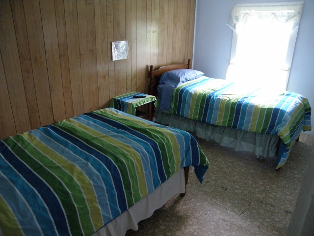
The last sheets I touched until Whitehouse Landing (photo by Zach)Day 1: Wednesday, June 16 (Spectacle Pond to Wilson Valley Leanto) 10.4mi
The first day started off with a large breakfast at Shaw's followed by a two hour drive up to the KA base near Abol Bridge. The roads in rural Maine are poorly maintained and tend to have extremely conservative speed limits. What would take 45 minutes in Kentucky took us almost two hours. We anticipated this and left ourselves an appreciable amount of time as a buffer which we ended up taking advantage of. After checking in at the KA base and leaving our packs to be loaded onto the float plane we drove to Abol Bridge, left our car there, and were shuttled back to the KA base. Our shuttle driver was a toothless man who, despite his appearance and almost inaudible speech, was extremely friendly and helpful. He knew the road intimately and skipped around every pothole in his huge GMC truck with 10-ply tires.
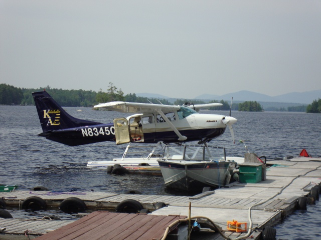
Yes, everything fits in itOnce back at the KA base we met Jim who would be our pilot. It only took moments before we were loading our gear into the compact float plane. His flying was very natural and his knowledge of the region was vast. He made sure to point out locations along the trail to us that we should be wary of or be sure to see. He also made sure to mention that the 20 minute flight would cover approximately 40 linear miles while our hike would cover closer to 100 miles. We began to appreciate this statement more as he continued to point out landmarks along the trail that seemed to alternate between being on the left and right side of the plane. The landing on Spectacle Pond was the smoothest flight landing I had ever experienced.
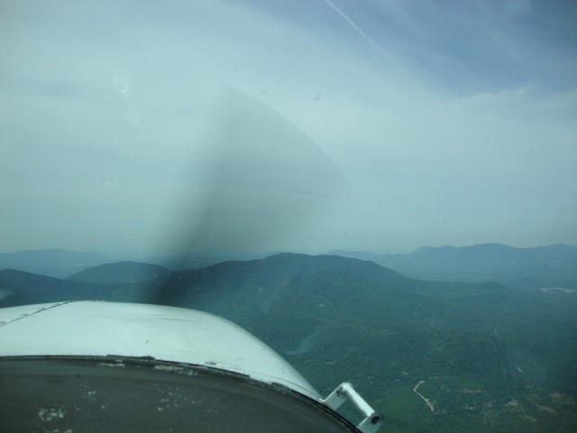
Looking forward after gaining altitude
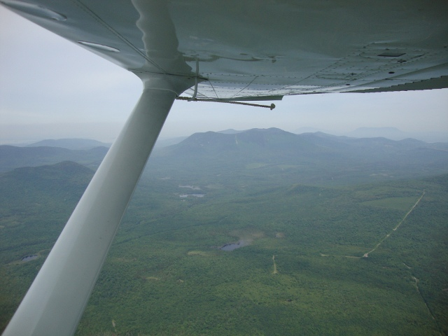
Some of the remote logging roads
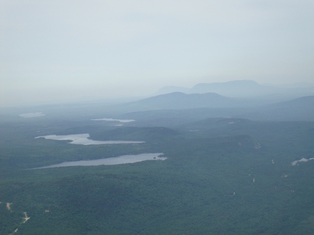
Lakes and mountains
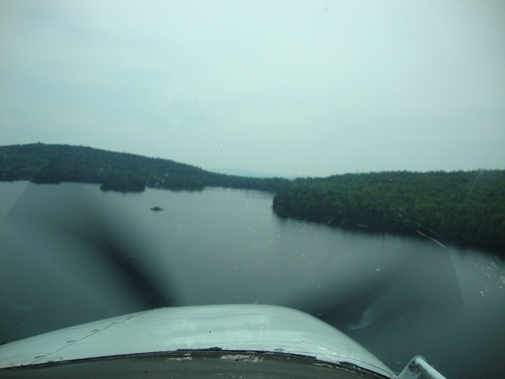
Coming in for landingAfter the landing we were told we would have to wade to shore so we quickly stripped down to our bare feet. It was an easy wade since Jim was careful to place us in water that was not even knee deep. He took our photo and immediately fired up the engine and disappeared after the plane lifted from the pond. The flight had been exhilarating but brief and once the plane disappeared we both had to take a moment to sit down and come to terms with the fact that we now had a 100 mile walk to get back to our vehicle at Abol Bridge. Unfortunately, it was noon before we began to cover some miles on the trail. Not 100 yards in we had our first trail encounter and it was to the sound of banjo strumming. We had heard stories of the banjo carrying man and we awkwardly said hello and continued past him shoving any flashes from the movie "Deliverance" out of our mind.
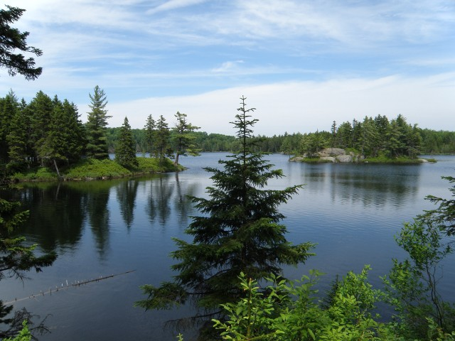
Beautiful photograph from the first day (photo by Zach)
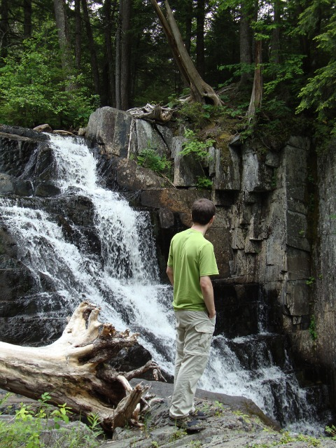
Me standing in front of Little Wilson FallsWe encountered a few other hikers finishing the wilderness, but the first notable encounter was when a hiker known as "road runner" sped past us in a bog while intricately balancing his steps from log to log. He expressed his intent to make it to Cloud Pond Leanto. I later calculated that this put him at a minimum of 22 miles for the day, and he had over 16 miles to go from when he met us and our encounter was in mid-afternoon. His aim was to finish in the top nine thru-hikers for this northbound season and he was currently in 10th place which explained his motivation to push on to Cloud Pond Leanto. A lot of the trail talk was centered around "trek" who was completing his 8th consecutive thru-hike this year. If he completes a thru-hike next year he will be the new record holder for consecutive thru-hikes. All I learned about Trek was that he is ex-military and specialized in building MRE's and other ration kits for field use. He also hikes the Long Trail in Vermont each year.
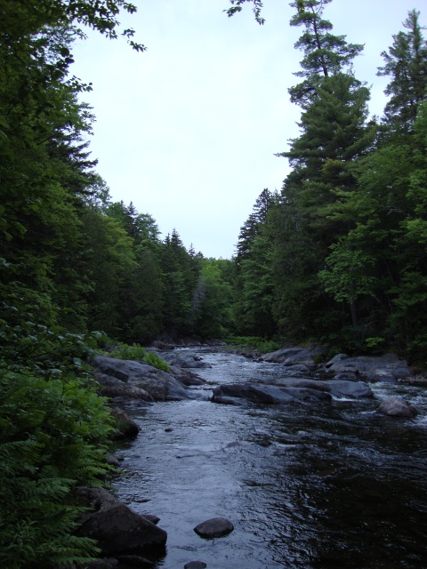
Looking down the first stream we had to fordAs night approached, we were clearly falling short of our goal of Long Pond Stream Leanto which was over 15 miles from our starting position. After a small debate and Zach expressing that he was done for the day (DFTD) we agreed to aim for Wilson Valley Leanto and to make up the miles in the next few days. After spying the shelter as dusk arrived we rested for a short period before being joined by three colorful male hikers who carried nothing less than a department store in each of their packs. Two of them quite clearly invest a lot of their time in the art of smoking pot and even went so far as to offer us some (which we both kindly refused). The leader of the group was clearly Nate who made sure to point out that he was an Eagle Scout. He seemed to make most of the important decisions and was the only one in the group who was not attempting a thru-hike. He would be attending graduate school in Seattle for molecular biology in the fall. His two weed-filled friends had lesser aspirations and intended to hike the trail until they weren't enjoying themselves anymore.
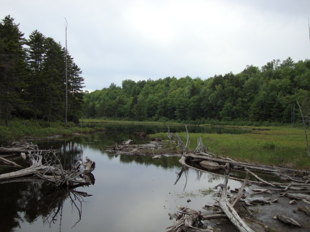
There are lots of small ponds to accompany the larger lakesThey were respectful of us and we entertained each other until rain arrived and made cooking dinner a bit difficult. After that, Zach and I decided to place our tents away from the weed-filled shelter and get to sleep for an early start tomorrow. Our first day had been shorter than anticipated, but our first stream ford had gone well and we were in good spirits. Unfortunately, the rain never stopped and there were periods of extremely strong downpours throughout the night. My new MSR Hubba HP handled the conditions with flying colors, but Zach's tent never truly dried.
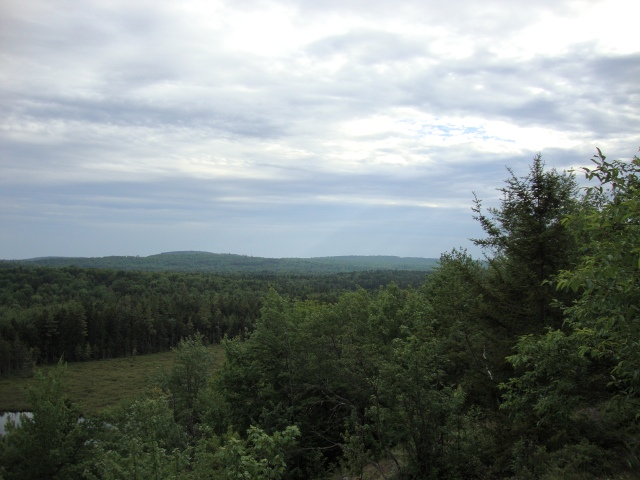
A sunny day is a rare day in MaineDay 2: Thursday, June 17 (Wilson Valley Leanto to Cloud Pond Leanto) 9.7mi (+0.3mi)
Our intentions to get an early start were thwarted by the unrelenting rain. We wanted to use the shelter for a staging area to dry off some gear and change our packing strategy to make sure important things stayed dry. The group using the shelter took their time and our start was once again delayed considerably. We watched as their 85L packs swallowed pound upon pound of gear including amenities such as an LED lantern and mosquito coils. The humorous sight of a hiker with an 85L pack wearing a poncho was too much to pass up and Zach snapped a photo of one of them as they departed. All in all, it was 11AM before we truly started the day.
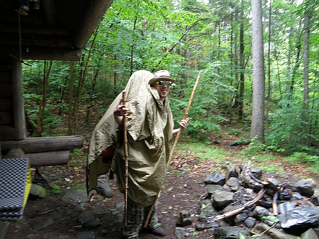
Sunglasses, walking stick, a straw hat, and a huge packAfter the rain the trail had become a much more dangerous place. Zach and I both took spills on slippery rocks and roots, but we managed to avoid serious injury. The day was characterized by the struggle to summit Barren Mountain (2,670ft) which took much longer than we had anticipated. The challenge was great, but the views from the summit provided a more than adequate reward. It was on the summit of Barren that I first noticed that Zach was struggling. I attributed it primarily to the weight of his pack and that it was only the second day hiking. We enjoyed some cheese and bagels before setting out again.
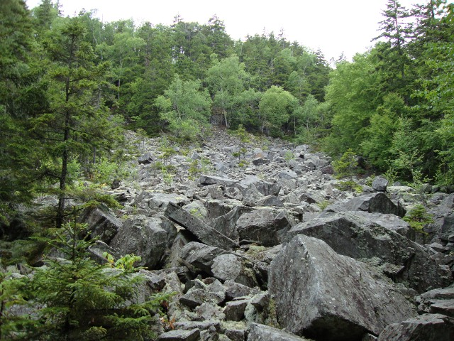
I took a spill on these large slippery boulders before snapping this photo
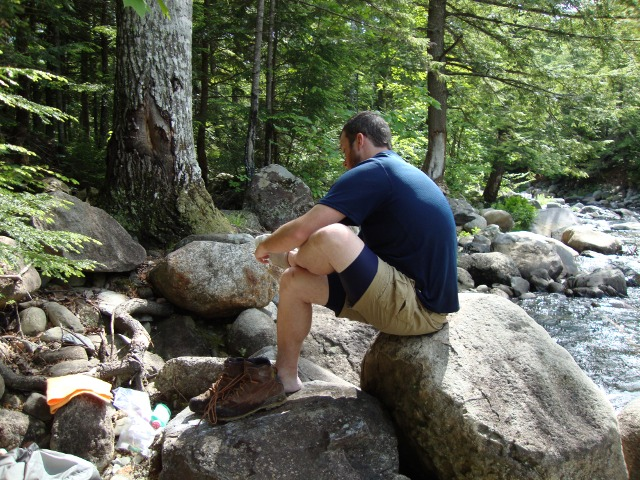
Zach demonstrating the stream ford routine
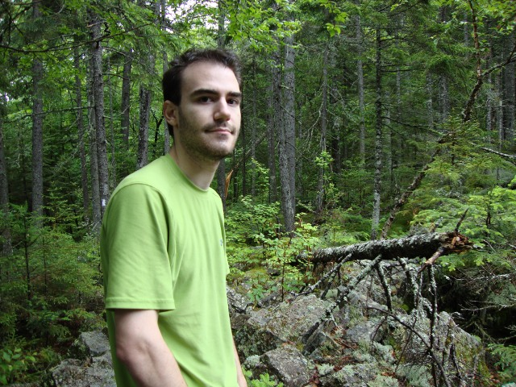
If my shirt was less neon I might have disappeared in the background
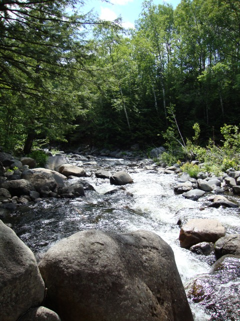
Another beautiful mountain stream
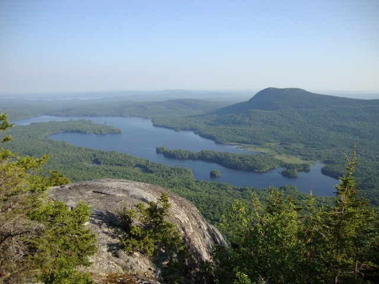
Looking westward from Barren Slide
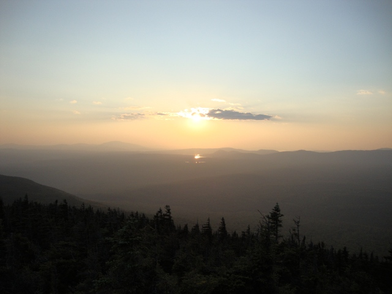
A view of the sun getting ready to set from the summit of Barren MtnWe once again ended up falling short of our intended mileage and had to settle on staying at Cloud Pond Leanto. A majority of the leanto's are located immediately adjacent to the trail, but Cloud Pond is another 0.3 mile hike off the trail and it is a relatively difficult side trail. This didn't make either of us happy hikers. I arrived at the leanto and was greeted by a man named James who was already turning in for the night. James was retired from the military and had worked for the postal service for some time before his wife got a high-security job in Washington, DC. He was very nice and despite the age difference connected with us very well. He told of his intentions to meet up with his wife near Harper's Ferry for a canoe trip when he made it that far along the trail. He also discussed things like MMORPG's and was clearly a multi-faceted individual.
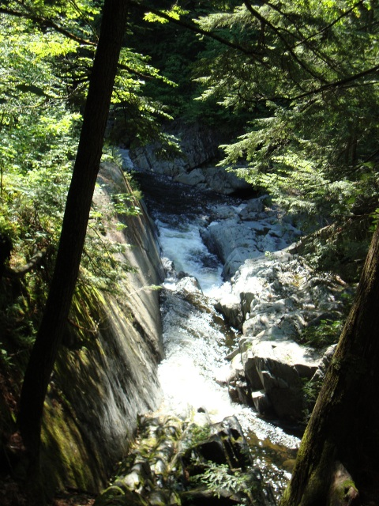
It was hard to get a good angle to photograph this small canyonI tended to my first blister that had formed in the latter half of the day and was provided a cotton ball by James to help deal with it in the morning. The water source for this Leanto was Cloud Pond itself which turned out to be relatively filthy. It clogged the water filter twice and I had to improvise a cleaning kit out of some shoe string left at the shelter since I had neglected to bring the field maintenance kit for the filter. As Zach pointed out, necessity is truly the mother of invention.
Zach and I realized that our pace was not turning out to be anywhere near what we had expected and we attributed it to the late starts and the difficult terrain. We resolved to push ourselves harder the next few days and to aim for an early start the next day to try to get out of the Barren-Chairback range which was slowing our progress considerably.
Our departure time is now measured in hours and not days, weeks, or months. A folding table holds everything that I will depend on for up to ten days along a hundred mile stretch of remote trail in Maine. While I am aware that the adventure is about to begin each hour feels slightly different than the last. Anticipation turns to apprehension and then back again. The most reassurance I can provide myself is that my planning has been sound and that I am as prepared as I can be.
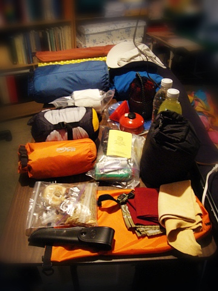
Featured in the above image is everything (exceptions include shoes, clothes, rain jacket, headlamp, firestick, compass, and the head lamp) that I will take with me into the 100 mile wilderness in Maine. On the far end is my Z-lite and tent poles. The large blue 10L dry bag is food for 9 days which is by far the heaviest item in my pack. My hat and Arc'teryx Atom LT have not been compressed yet, but they will snugly fit in the remaining dry sack I have. In front of the food bag is my (ever so important) toilet paper and hand sanitizer, along with my cookware. The compression sack contains all of my clothes, and the dry bag in front of it contains both of my liners. The large black dry sack is the MSR Hubba tent (this thing can be compressed quite a bit). The external plastic bags contain food for the first day (which I could not fit into the food bag) along with everything else. Closest is a $9 watch I picked up to tell the time, a chamois to use for drying myself, a bandana and beanie, my Fallkniven F1 knife, and the unused dry bag which will receive the rest of the gear. I'm quite happy about the fact that all of my gear should be protected in a dry bag of some sort since I expect it to be wet often.
My total pack weight will come at under 45lbs which I am very happy with. I had estimated my food to weigh in at approximately 20lbs and it turned out to be closer to 16lbs. This change, coupled with my current choice to leave behind a down sleeping bag in favor of a cotton and synthetic liner has caused my total pack weight to now be approximately 43.5lbs. At the moment, my intention is to take no sleeping bag and to use my MSR pocket rocket to cook with. Both of these decisions are not final, and I intend to make more informed decisions the day before we start our hike (Tuesday). The forecast currently has most nights in the mid to high 50's (F) which I simply do not need the down sleeping bag for. If the forecast reveals low 50's and possibly 40's overnight, I would be inclined to trade in one liner for the sleeping bag.
We're well-prepared not only for the trip but also for the drive up. My older sister was kind enough to bake us a batch of cookies which we were instructed to consume prior to beginning the hike. I'm sure we'll have no problem following that order. I also was treated to a delicious Indian curry dish tonight that my mother cooked. My father has been kind enough to offer up gear for sacrifice and a more reasonable car to drive. We both appreciate all of these gestures and support.